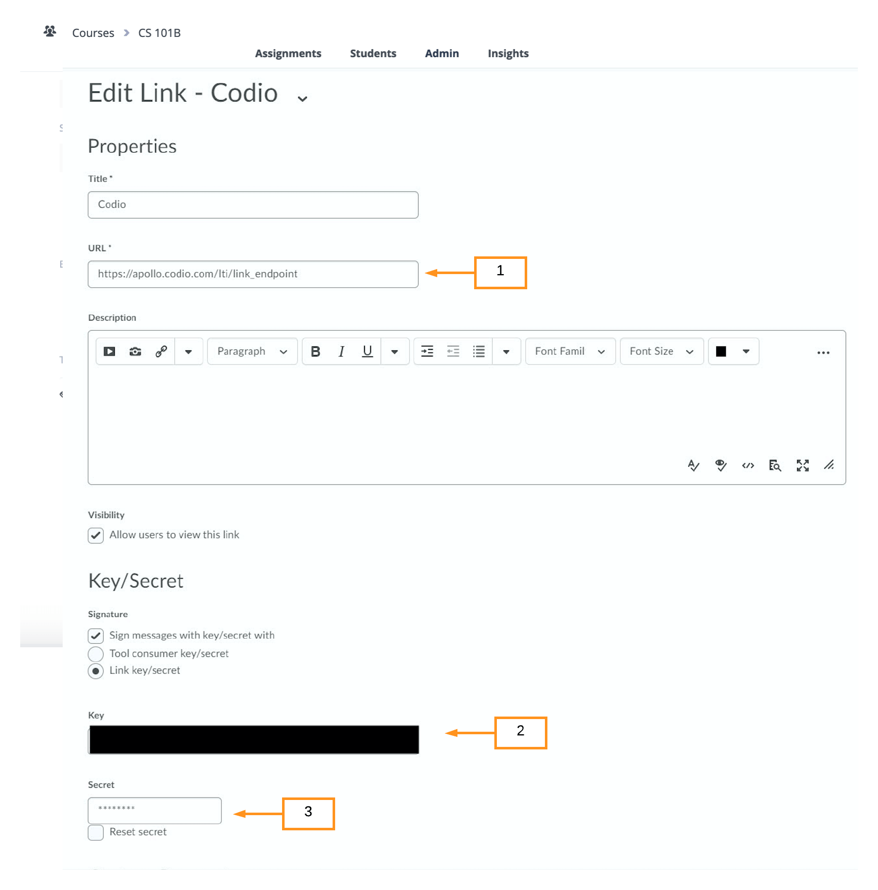
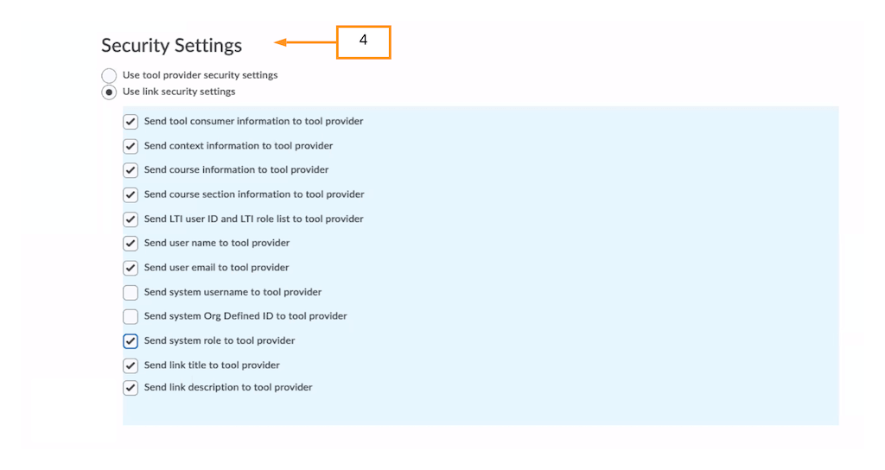
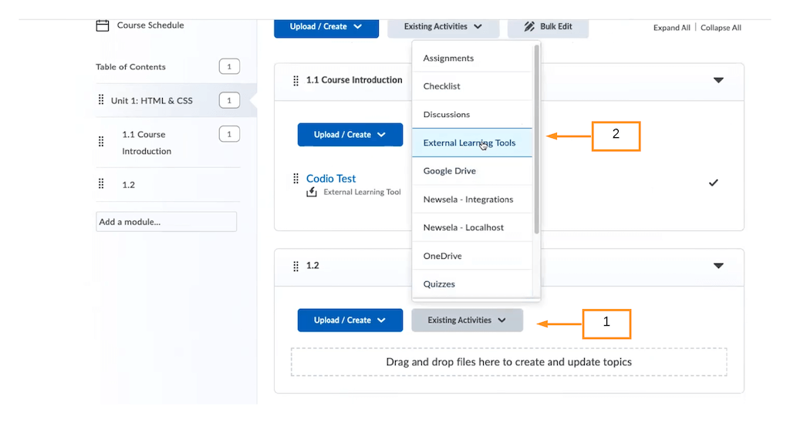

D2L¶
In Codio:
Enable LTI for Your Course¶
Open the course you would like to connect or create a new course.
Make sure you have at least one published assignment or add a new one. (see Add and Remove Course Assignments)
Select the Admin tab and click on the blue Edit Details button at the bottom.
Select the ENABLE LTI option.

Click Save.
Bring up the LTI Integration Information¶
Click your user name in the bottom left of your dashboard
Choose your Organization
Click the LTI Integrations tab to bring up the following settings.

In D2L:
Create an External Learning Tools Link in D2L¶
In Manage External Learning Tools Links create a New Link and name it Codio
Paste
https://apollo.codio.com/lti/link_endpointin (1) the URL field.Copy the LTI Consumer information from Codio into (2).
Copy the LTI Secret information from Codio into (3).

Fill in the Security fields as depicted in (4) below.

Click Save.
Connect your D2L Modules to your Codio Assignments¶
Create a module in your D2L course.
Select Existing Activities (1) -> External Learning Tools (2)

From the list of available LTI links, select the Codio tool you created earlier.
Click on the module name to bring up all the Codio courses for which you have enabled LTI.
Select the Codio assignment you want to connect.
When you open the link again you will see the Teacher view of the course with the connected assignment selected. Students will see the assignment opened in student mode.
Single sign-in and account creation¶
Codio maps D2L users to Codio users by using the D2L email address to identify the user and create the Codio account. In all subsequent access, the D2L userID will be used. In the event the user changes their email address in D2L, the user will be mapped to the same Codio account.
If the user does not have a Codio account, a new user account will be created in the background and the user will enter directly into the Codio content. The D2L user role is carried into Codio.
If the user already has an account they will enter into the Codio content without any sign-in required. If they already have a Codio account, but are not a member of the organization, they will be required to complete an email verification.